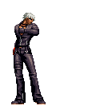
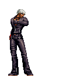

Historia
Golpes
Dicas
Curiosidades
K' (K-Dash) fez sua estreia em The King of Fighters '99 como o protagonista da nova saga. Originalmente, K' era um garoto normal que foi sequestrado pela organização NESTS e teve suas memórias apagadas. Ele foi submetido a experimentos que implantaram o poder do fogo de Kyo Kusanagi em seu corpo, tornando-o um guerreiro com habilidades de manipulação de chamas.
Em KOF '99, K' se junta a Maxima, Whip e Benimaru como parte de um plano da NESTS para monitorar suas criações. No entanto, K' rapidamente se rebela contra a organização, decidido a descobrir sua verdadeira identidade e a se vingar por ter sido transformado em uma arma.
Nos eventos de KOF 2000 e KOF 2001, K' continua sua luta contra NESTS, enfrentando diversos clones e agentes da organização, incluindo Zero e Igniz. Durante essa jornada, ele descobre mais sobre seu passado e suas origens, além de estabelecer fortes laços de amizade com seus companheiros de equipe, especialmente Maxima.
Com a queda de NESTS em KOF 2001, K' finalmente se liberta da organização, mas continua participando dos torneios KOF para manter suas habilidades afiadas e enfrentar novos desafios. Em KOF 2003 e KOF XI, ele é atraído para a batalha contra Ash Crimson, que está roubando os poderes dos guerreiros KOF, incluindo o de Kyo Kusanagi.
Em KOF XIII, K' se une novamente a seus aliados para enfrentar as forças de Ash e resolver o caos causado pela manipulação dos poderes de Orochi. Ele luta não só para proteger seus amigos, mas também para finalmente se libertar de seu passado e viver como uma pessoa livre.
Nos jogos mais recentes, KOF XIV e KOF XV, K' continua a participar dos torneios, agora mais seguro de si e de sua identidade. Ele e sua equipe enfrentam novos vilões como Antonov e Verse, mas K' permanece focado em seu objetivo de manter sua liberdade e proteger aqueles que lhe são importantes.
Ao longo da série, K' evolui de um jovem rebelde e desconfiado para um guerreiro determinado e leal, que luta tanto contra seus próprios demônios internos quanto contra as ameaças que surgem ao seu redor. Sua busca por identidade e propósito é uma das narrativas centrais da saga, e sua relação com Maxima e os outros membros da equipe é um dos pilares de seu desenvolvimento.

Este vídeo pertence ao canal
KOF da Depressão
Nesta pagina temos varias dicas relacionadas ao personagem escolhido, como vídeos de combates entre jogadores, explições detalhadas sobre os pontos positivos e negativos. Clique nos botões para ter acesso as informações desejadas
Vídeos
Desvantagens
Vantagens
O vídeo abaixo é um combate realizado no FIGHTCADE por dois jogadores Rank B. Um duelosentre K e Ralf com um total de 6 rounds
Este é apenas um dos muitos vídeos disponíveis em nosso canal no YouTube! Se você gosta de lutas emocionantes, siga-nos e compartilhe nosso conteúdo. No canal, você encontrará diversos combates entre lutadores talentosos e, quem sabe, até um duelo seu. Confira o link para o nosso canal logo abaixo e não perca nenhuma batalha!
YoutubeDependência de Recursos
K' é altamente dependente de power gauge para maximizar seu potencial ofensivo. Sem barras de poder disponíveis, seu dano pode ser relativamente baixo, limitando a sua capacidade de pressionar o oponente.
Defesa Fraca
Embora K' tenha boa mobilidade, sua defesa é relativamente fraca. Ele não tem muitos movimentos defensivos eficazes ou reversais, o que pode deixá-lo vulnerável a pressão constante de personagens com bons rushdowns.
Ataques Especiais Puníveis
Muitos dos ataques especiais de K', como o "Second Shoot" e algumas variações do "Ein Trigger," são puníveis se bloqueados. Isso significa que, se mal utilizados, podem deixar K' exposto a contra-ataques.
Curva de Aprendizado
Embora ele tenha combos simples, dominar K' em um nível alto requer prática, especialmente para utilizar plenamente seu jogo de zoning e combinações de ataques especiais. Isso pode ser um desafio para novos jogadores.
Jogo Aéreo Limitado
K' tem um jogo aéreo menos versátil em comparação com outros personagens, o que pode torná-lo vulnerável contra oponentes que dominam ataques aéreos ou cross-ups.
Essas desvantagens equilibram as forças de K' e exigem que os jogadores utilizem uma estratégia cuidadosa para maximizar seu potencial no jogo.
Movimentação Versátil
K' tem uma movimentação ágil e fluida, permitindo que ele se desloque rapidamente pelo cenário. Seu dash é rápido e eficaz para aproximações e fugas.
Ataques Especiais Poderosos
Ele possui ataques especiais, como o "Ein Trigger" e o "Second Shoot", que são versáteis e podem ser combinados de várias maneiras para criar pressão no oponente.
Versatilidade nos Combos
K' é conhecido por sua capacidade de realizar combos longos e devastadores, especialmente se o jogador dominar suas técnicas de cancelamento e encadeamento de golpes.
Zoneamento Eficiente
Com o uso do "Iron Trigger" e de seu projétil "Second Shell", K' consegue controlar o espaço e manter seus oponentes à distância ou forçá-los a cometer erros.
Estilo e Carisma
K' é um dos personagens mais estilosos e carismáticos da série, com uma personalidade marcante e um visual que atrai muitos jogadores.
Especial de Alto Dano
Seus movimentos superes, como o "Chain Drive" e o "Heat Drive", são eficazes e podem causar grande dano, sendo úteis tanto para finalizar combos quanto para reverter situações desfavoráveis.
Esses atributos fazem de K' uma escolha popular e eficaz, especialmente para jogadores que gostam de personagens ágeis e com boas opções ofensivas e defensivas.
Inspiração
A inspiração para o aparecimento de K' e Maxima pode ser encontrada no jogo de arcade Psikyo The Fallen Angels. A ideia de K' usar óculos escuros foi tirada por outro personagem de Fallen Angel. Seu homônimo foi tirado de um personagem clone da light novel Blue Knight Berserga Monogatari, que se passa no mesmo universo da série de anime Armored Trooper Votoms . Durante as fases iniciais de desenvolvimento de The King of Fighters '99 , a introdução de K na série pretendia remover os personagens populares Kyo Kusanagi e Iori Yagami do elenco, embora essa ideia tenha sido posteriormente descartada.CAC Yamasaki previu que K' seria popular em seu lançamento, porém essa previsão nunca se tornou realidade. Em uma entrevista ele comenta que K' era "um pouco simples demais"
Mais tarde, K' receberia uma ligeira reformulação em seu cabelo devido ao protagonista de Garou: Marca dos Lobos se parecer com K'. Isso fez com que o designer supervisor entrasse em pânico ao perceber isso. Para The King of Fighters XIII , o produtor Masaaki Kukineo menciona que a equipe estava buscando uma versão mais "legal" de K', onde ele agora mantém seus óculos escuros durante a luta. Ele queria que os fãs prestassem muita atenção às suas novas animações.
Informações pessoais:
| K Dash | |
|---|---|
| Nome Completo | K' ou Kdash (nome verdadeiro desconhecido) |
| Data de nascimento | Desconhecido; implica ter entre 16 e 18 anos |
| Local de nascimento | Desconhecido |
| Altura | 1,83 |
| Peso | 65kg |
| Não gosta | Doces |
| Comida favorita | Carne seca |
| Esporte | Nenhum (odeia exercicios) |
| Arma | Nenhum (usa uma luva especial que mantém seu poder sob controle; ele também usa óculos escuros como projétil) |
| Estilo de Luta | Violência Pura + Jeet Kune Do |
Personagens relacionados:
Os personagens abaixo possuem algum tipo de ligação positiva ou negativa com K' Dash e estão presentes no Kof 2002

Whip
Whip cujo nome verdadeiro é Seirah, apareceu pela primeira vez em The King of Fighters '99 como o novo membro do Ikari Warriors Team . Ela é um clone da falecida irmã de K , que compartilha seu nome verdadeiro.

Kyo
K'Dash foi infundido com o DNA de Kyo Kusanagi, que lhe deu o poder de pirocinese. Durante o programa, as memórias de K' foram manipuladas, e ele foi forçado a acreditar que ele era clone de Krizalid.

Kula
Kula Diamond foi criada pelos NESTS com o objetivo de destruir K'Dash, mas durante sua jornada eles se tornaram aliados e passaram a buscar uma maneira de destruir o seus criadores, o grupo NESTS. Este laço entre os dois fez com que K' cuidasse de Kula como uma irmã mais nova.

Maxima
K'Dash e Máxima são parceiros de equipe e tem uma boa relação. K' costuma xingar Maxima - como "estúpido", "idiota" etc. - mas na verdade confia na confiabilidade de seu parceiro. Ele dificilmente é educado e é sempre rude, mesmo com as pessoas próximas a ele. Como K' geralmente expressa suas preocupações de uma maneira "durão", Maxima, brincando, o chama de desonesto ou rígido. Por causa disso, K' frequentemente deixava Maxima cuidar de quaisquer necessidades sociais em seu lugar.